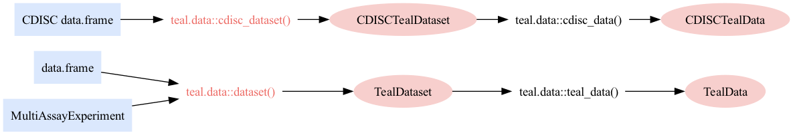

Migrate your TealData into teal_data
NEST CoreDev
Source:vignettes/migrate-to-teal_data.Rmd
migrate-to-teal_data.RmdOverview
Getting the most out of teal required the
teal-app-developer to pass a TealData object
in the data argument of the teal::init() which
is now replaced with a teal_data object. This change
simplifies the way data is created and processed by teal while
streamlining the data flow across the teal modules and significantly
improve the maintainability of the teal packages.
How was data being specified before?
The teal-app-developer creates a
TealDataset object using the functions
teal.data::dataset() and
teal.data::cdisc_dataset(), which encapsulate both data and
code, along with some metadata. This object is subsequently used to
create a TealData object with the functions
teal.data::teal_data() and
teal.data::cdisc_data(), capable of accommodating multiple
TealDataset objects.
The TealData object is passed to
teal::init(), where it is processed into a
tdata object. This tdata object is then made
available across all the modules for the
teal-module-developer to access and use within the teal
modules.

Deprecated examples of creating data
# Deprecated way of using data.frame into teal::init()
app <- teal::init(
data = teal.data::teal_data(
teal.data::dataset(dataname = "IRIS", x = iris, code = "IRIS <- iris"),
teal.data::dataset(dataname = "MTCARS", x = mtcars, code = "MTCARS <- mtcars")
),
modules = teal.modules.general::tm_variable_browser()
)
shiny::shinyApp(app$ui, app$server)
# Deprecated way of using CDISC data.frame into teal::init()
ADSL <- scda::synthetic_cdisc_data("latest")$adsl
ADTTE <- scda::synthetic_cdisc_data("latest")$adtte
app <- teal::init(
data = teal.data::cdisc_data(
teal.data::cdisc_dataset(
dataname = "ADSL", x = ADSL,
code = "ADSL <- scda::synthetic_cdisc_data('latest')$adsl"
),
teal.data::cdisc_dataset(
dataname = "ADTTE", x = ADTTE,
code = "ADTTE <- scda::synthetic_cdisc_data('latest')$adtte"
)
),
modules = teal.modules.general::tm_variable_browser()
)
shiny::shinyApp(app$ui, app$server)
# Deprecated way of using MultiAssayExperiment into teal::init()
MAE <- hermes::multi_assay_experiment
app <- teal::init(
data = teal.data::teal_data(
teal.data::dataset(dataname = "MAE", x = MAE, code = "MAE <- hermes::multi_assay_experiment")
),
modules = teal.modules.hermes::tm_g_scatterplot(label = "scatterplot", mae_name = "MAE")
)
shiny::shinyApp(app$ui, app$server)The new way of specifying the data
Now, the teal-app-developer needs to use one of the
teal_data generator functions:
teal.data::teal_data() or
teal.data::cdisc_data(). These functions have been extended
to accept multiple data objects.
The teal_data object is passed to
teal::init(), where it is processed into a
tdata object. This tdata object is then made
available across all the modules for the
teal-module-developer to access and use within the teal
modules.

Revised examples of creating data
# Current way of using data.frame into teal::init()
app <- teal::init(
data = teal.data::teal_data(
IRIS = iris,
MTCARS = mtcars,
code = "
IRIS <- iris
MTCARS <- mtcars
"
),
modules = teal.modules.general::tm_variable_browser()
)
shiny::shinyApp(app$ui, app$server)
# Current way of using CDISC data.frame into teal::init()
ADSL <- scda::synthetic_cdisc_data("latest")$adsl
ADTTE <- scda::synthetic_cdisc_data("latest")$adtte
app <- teal::init(
data = teal.data::teal_data(
ADSL = ADSL,
ADTTE = ADTTE,
code = "
ADSL <- scda::synthetic_cdisc_data('latest')$adsl
ADTTE <- scda::synthetic_cdisc_data('latest')$adtte
"
),
modules = teal.modules.general::tm_variable_browser()
)
shiny::shinyApp(app$ui, app$server)
# Current way of using MultiAssayExperiment into teal::init()
MAE <- hermes::multi_assay_experiment
app <- teal::init(
data = teal.data::teal_data(
MAE = MAE,
code = "MAE <- hermes::multi_assay_experiment"
),
modules = teal.modules.hermes::tm_g_scatterplot(label = "scatterplot", mae_name = "MAE")
)
shiny::shinyApp(app$ui, app$server)